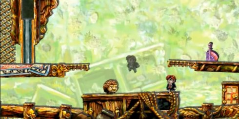

Braid - 一个发人深思的游戏

我已经很久很久没有打游戏了（如果不算 Angry Birds 之类用来打发时间的游戏的话）。我的最后一个真正意义上的游戏机是 PlayStation 1。在那上面，我真正欣赏的最后一个游戏，是 Metal Gear Solid (1)。
我曾经是一个游戏迷，可是进入了计算机专业的学习之后，我就开始失去对游戏的兴趣，基本上每玩一个都让我失望一次，不管别人把它吹的多么“经典”。不知道为什么，别人玩得津津有味的游戏，我玩一会儿就把它里面的“公式”都看透了。我清楚地知道这游戏的设计者是怎么在“耍我”，在如何想方设法浪费我的时间。
同样的，别人看得津津有味的小说和电影，我经常一看开头就能猜到它要怎么发展，知道这编剧是怎么在胡编滥造，索然无味。所以我基本上不去影院看最新的电影，宁愿在网上看一些几十年前的老电影。我貌似只喜欢那些能让我“猜不透”的东西。
Braid，就是这样一个让我没猜得透的游戏。
这是一个同事推荐的。本来已经对电玩完全失望的我，破例的从 App Store 买了来。玩过之后觉得真的很不错，有一种所谓的“mind blowing”的感觉。以至于我花了两整天时间，废寝忘食，把它给打通关了。
Braid 的主体结构，和最古老的“超级玛丽”没什么两样。一个小人，可以跑，可以跳。一些小怪物，跑来跑去的。你可以跳起来踩它们。
最终的目标，是收集到所有的拼图，然后把它们组合成图片。组合图片是很容易的事情。游戏的难度其实在于如何拿到这些拼图。它们有可能被挂在很高的地方，或者被门挡住。
可是这有什么值得一提的呢？这游戏很不一样的地方是，它给你提供了几种绝无仅有的“超能力”，而且把它们与谜题结合得几乎天衣无缝。
你有三种超能力：
逆转时间的能力
在任何时候按下 Shift 键，游戏的时间就会逆转，“undo”之前的所有动作。即使你死了，都是可以复活的。死去的小怪物们也会复活。可是就算这样，有些拼图还是很难拿到。
值得一提的是，时间逆转的时候，画面是流畅无缺损的，连爆炸场面都会“收缩”。更令人赞叹的是，游戏的背景音乐也会同步逆转。如果在时间逆转的时候按“上”，“下”键，就可以调整时间“快退”和“快进”的速度。当然，此时的场景就像录像机在快退或者快进。
产生“多重现实”的能力

在某些章节，你可以实现“多重现实”。做一个动作，然后按 Shift 键让时间逆转，当你停止逆转的时候，你的影子就会开始“redo”刚才的那段“历史”。而这个时候你可以做一些不同于以前的事情。这就好像有两个世界，一新一旧，从“历史的分叉点”开始，同步交汇。
你必须掌握好时间才能跟影子合作，因为影子的行动速度是不受你的“现场控制”的，它只是按部就班的重演你 undo 掉的历史。
扭曲时间的指环

在某些章节，你会有机会使用一个魔法指环。把这个指环放在地上之后，它会在附近的球状空间中形成时间的“扭曲”。这有点像黑洞的原理。越是靠近指环的位置，时间流动越慢。而当你远离指环，时间就逐渐恢复正常。指环的巧妙使用，是解决这些章节谜题的关键。
同样的，音乐与指环的特异功能是完美配合的。当你靠近指环的时候，背景音乐就会出现相应程度的扭曲。有点像录音机卡带的感觉 :)
在解决了所有的谜题之后，我回味了一下，自己为什么欣赏 Braid。这也许是因为它符合一个优秀的，非低级趣味的游戏设计：屈指可数的简单规则，却可以组合起来，制造出许许多多的变化。
你只有3种超能力，但是如何利用和“组合”这些超能力，却形成了解决谜题的关键。有些题目很有点难度，以至于你会希望有第4种超能力出现，或者希望捡到别的什么“法宝”。可是它们是不存在的。你必须使用那仅有的3种能力，加上巧妙的思索，细心的观察，才能达到目的。在解决了一个很难的谜题之后，你往往会一拍脑袋：哇，我怎么一开头没想到！